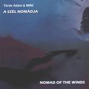

| Artist: | Ádám Török & Mini |
| Title: | Nomad Of The Winds |
| Label: | Stereo Periferic BGCD092 |
| Length(s): | 52 minutes |
| Year(s) of release: | 2001 |
| Month of review: | [12/2001] |
| 1) | Mysterious Flying Overground Of Carpathia | 12.06 |
| 2) | Aphrodite's Dance Around And Around At The Clear Blue Lake | 21.00 |
| 3) | Nomad Of The Winds | 9.02 |
| 4) | Lord Of The Vineyard | 7.43 |
| 5) | Biofood For Children | 2.30 |
A playful opening we find on the second, very long track. Again, the music stays rather calm throughout, bringing to my mind both Suzanne Ciani as well as a sweeter variant on ECM styled music. Later the music gets more prominence on the keyboards and the bass starts to swing. What I lack here is a tension, the music seems to flow by too easily. Other pointers here are Flairck and Ant Phillips with a hint of Tull and even ELP. However, the music continues to be calm and lacks in appeal. At the end it gets to be boring.
The title track opens with percussively played piano and introverted vocals and flute. The drums are a tad more active, but continues to keep the music calm and slightly folky. Later the music does get a bit more active, but the transitions strike me as unnatural. Lord Of The Vineyard reminds me of the previous tracks, and is maybe a bit more frolic. Again the fire is lacking.
The short Biofood for children concludes the album. Quite a merry tune, but the music continues to be too careful for my tastes.